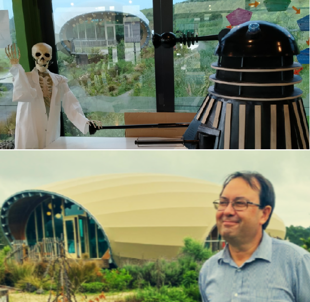

Designing for Depth: The Role of Instructional Design and Moderation in Building a cross-curricula STEM Programme
"Creating a new programme is never just about content—it's about crafting a learning journey. ".
In the case of a STEM programme, especially one that is cross-curricular and future-focused, instructional design and moderation are not just helpful—they are essential. Imagine the challenge of designing a combined Year 10 - Year 12 Physics course!
Brainstorming a good curriculum summary, for a single course, or an entire programme, should offer a rich foundation for understanding how values, teaching perspectives, and graduate outcomes must align to create meaningful, sustainable learning experiences.
Instructional Design: Building with Purpose
Instructional design is the architecture of learning. It ensures that every lesson, unit, and assessment is intentional, coherent, and aligned with broader goals. When I was in charge of Science and Mathematics, the graduate profile for high school learners emphasized the development of citizen scientists—technically capable, ethically aware, and scientifically literate individuals who can navigate misinformation and contribute to sustainable futures.
"This vision demands a curriculum that goes beyond traditional silos."
In STEM, this means integrating science, mathematics, digital technology, and environmental thinking into real-world problem-solving. My approach to science and maths, for example, uses the Teaching Perspectives Inventory (TPI) lenses of Developmental and Apprenticeship. These perspectives prioritize growth through guided practice and real-world application—perfect for a STEM programme that values creativity, collaboration, and ethical inquiry.
Instructional design also ensures that foundational Skills, Knowledge, and Attitudes (SKAs) are scaffolded across year levels. By starting with Level 4 and Level 3 graduate profiles (Years 12 & 13) and working backward to Years 10 & 11, educators can ensure that learners are equipped with the right tools at the right time. This backward design approach is critical for STEM, where concepts build cumulatively and practical skills require early exposure.
Moderation: Ensuring Consistency and Equity
"Moderation is the compass that keeps instructional design on course. It ensures that assessments are fair, consistent, and aligned with learning intentions. "
In a cross-curricular STEM programme, moderation becomes even more important because learning often happens in non-traditional formats—through projects, fieldwork, and interdisciplinary inquiry.
My emphasis on project-based assessment using SOLO taxonomy is a strong example. Students self-mark before submission, engage in diagnostic assessments, and reflect on their learning journey. This approach not only builds metacognitive awareness but also ensures that assessment is a tool for growth, not just measurement.
Moderation also helps balance flexibility with rigor. An Art course, for instance, values student choice, conceptual understanding, and creative expression. A language programme, in contrast, might emphasise knowledge acquisition, study habits, and explicit teaching. These contrasting philosophies highlight the need for moderation to ensure that all students—regardless of subject—are held to consistent standards of excellence and support.
Cross-Curricular Synergy
"A well-designed STEM programme doesn’t exist in isolation. It draws from the strengths of other disciplines. "
Taking an environmental sciences approach, with its systems thinking and regenerative action, complements STEM’s focus on sustainability. Language and literacy strategies—like thinking tools and vocabulary development—are essential for scientific communication and comprehension. An Arts course with its emphasis on art activism and conceptual exploration can enrich STEM by fostering creativity and ethical reflection.
Instructional design must therefore include opportunities for transdisciplinary learning. Unit planners should prompt teachers to consider experiential learning, cross-curricular links, and real-world applications. This not only deepens understanding but also prepares students for the complexity of life beyond school.
Values-Driven Learning
"Instructional design sets the stage. Moderation keeps the performance honest. Together, they ensure that education is not just delivered—but transformed."
Ultimately, instructional design and moderation are tools for embedding values into education.
In designing a STEM programme, educators must ask: What kind of thinkers and citizens do we want to produce? What teaching perspectives best support that vision? How do we ensure that every learner, regardless of background or interest, has the opportunity to thrive?
The answers lie in collaboration, clarity, and a commitment to continuous improvement. Instructional design sets the stage. Moderation keeps the performance honest. Together, they ensure that education is not just delivered—but transformed.
Maths, Science, Art: Robotics and Mission to Mars - Cross-curricula STEM instructional design and moderation.